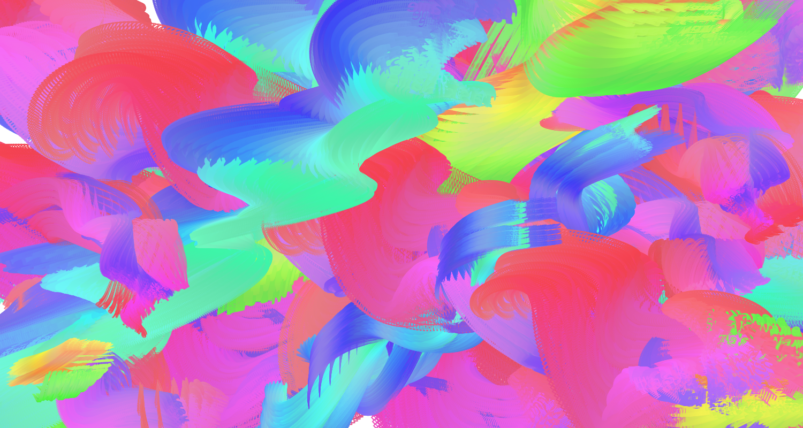
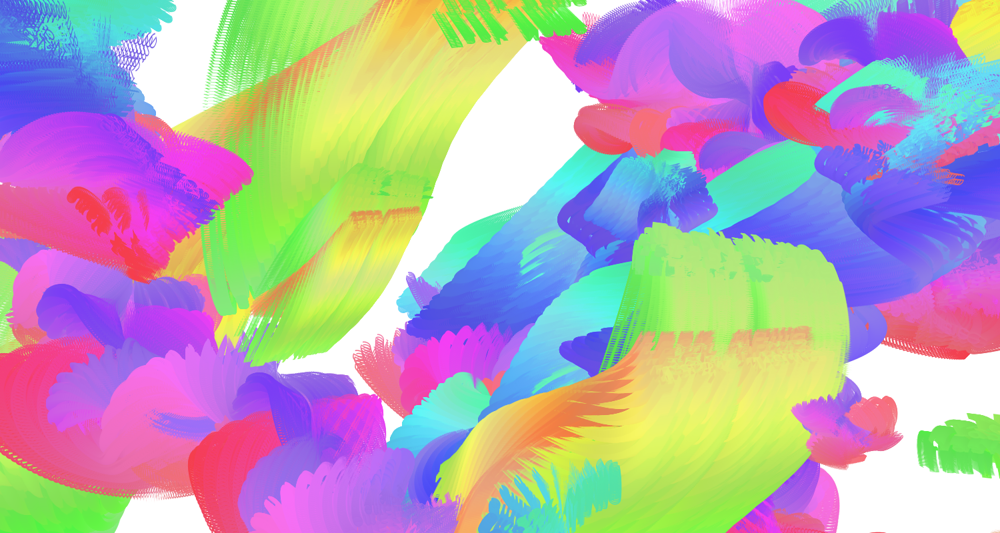
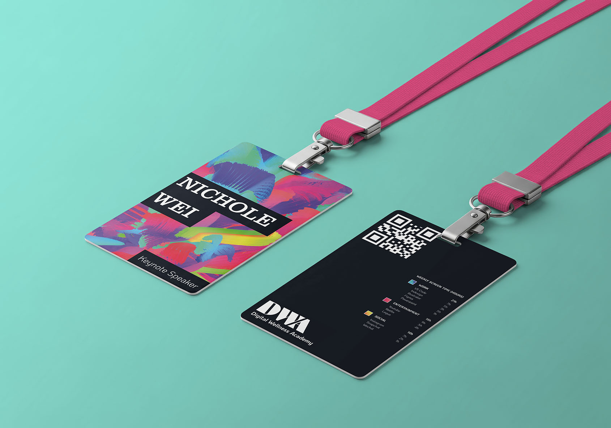

Creative Coding:
Screen Time Symposium
Year
Medium
Instructor
2026
p5.js, Indesign
Luiz Ludwig

Context
In the contemporary digital age, an individual's screen time record reveals far more about their personality and behavioral patterns than one might expect. For the promotional materials of a neuroscience symposium centered on screen time “Are You in Control of Your Brain?” I designed a kinetic typography piece that adapts to one's screen time data.
Strategy
The visualization categorizes a person's screen usage into three groups: work, entertainment, and social. The longer the duration of use, the larger and faster the typography becomes, leaving dynamic traces across the screen to reflect the intensity and accumulation of attention over time.
live URL of p5.js kinetic type


Examples of kinetic type generations
Process
Each category is expressed through a distinct color and movement. “Work,” rendered in blue, follows a more structured and goal-oriented motion, calmly swirling upward. In contrast, “Entertainment,” in pink, moves freely and unpredictably, evoking the concept of web surfing. “Social,” in yellow, flows in a continuous, ribbon-like motion, symbolizing connection and interaction between people.
On the design system of promotional materials, blocked typography resembling multiple tabs or on-screen alerts was used. A black-and-white palette was applied to all non-kinetic elements to emphasize the color within the visualization.

poster

name tag

billboard screen